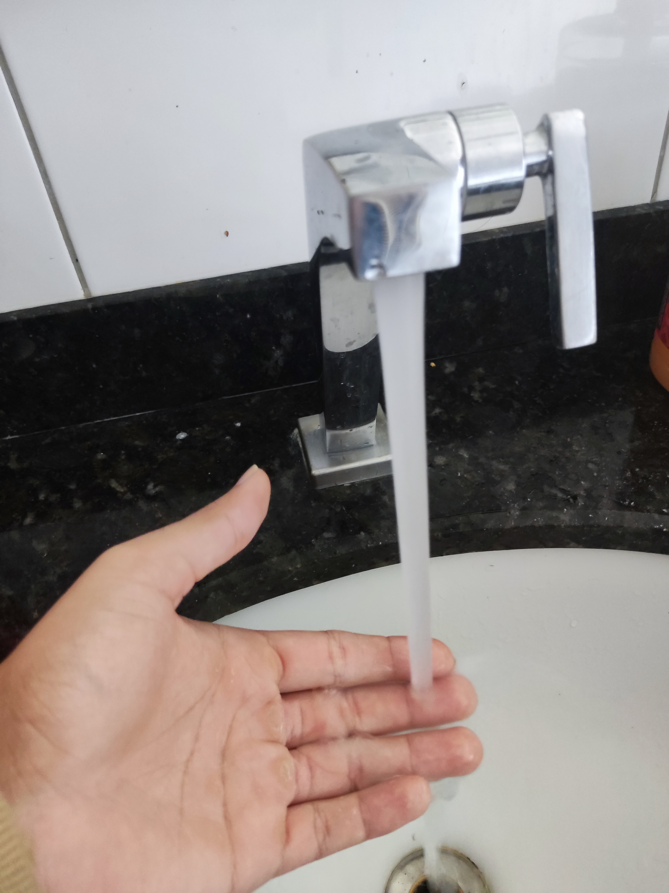
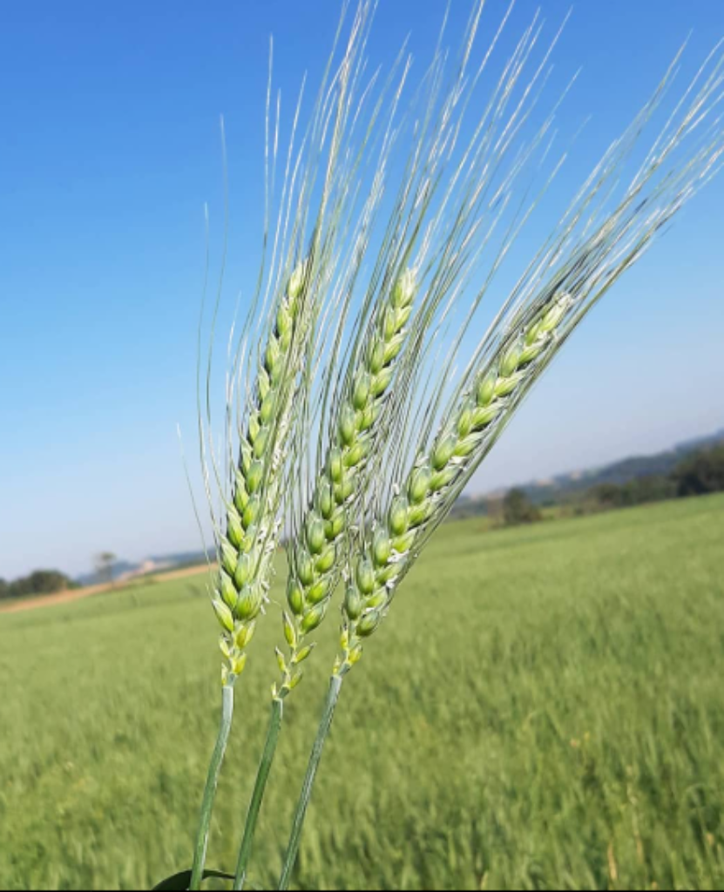

AGRINHO 2025
Festejando Conexão Campo Cidade
Acessibilidade à Água no Agro
✅ AUMENTO DA PRODUTIVIDADE
- Irrigação de precisão para maior rendimento
- Hidratação animal controlada por sensores
- Processos agroindustriais otimizados
✅ SUSTENTABILIDADE
- Gestão inteligente de recursos hídricos
- Tecnologias que reduzem desperdício em até 40%
- Agricultura adaptada às mudanças climáticas
✅ DESENVOLVIMENTO RURAL
- Melhoria do IDH em comunidades agrícolas
- Fixação de mão-de-obra qualificada
- Geração de emprego e renda local


Água: O Combustível da Agricultura
🌱 FUNÇÕES VITAIS
- Ciclo nutricional: Transporte de minerais do solo para as plantas
- Fotossíntese: Matéria-prima para conversão em energia
- Regulação térmica: Controle da temperatura foliar
- Estrutura celular: Mantém a rigidez dos tecidos vegetais
⚠️ RISCOS DA MÁ GESTÃO
- Perdas de até 70% na produtividade durante secas
- Salinização do solo por irrigação inadequada
- Proliferação de doenças em excesso hídrico
💡 SOLUÇÕES INTELIGENTES
- Sensores de umidade com IoT para irrigação precisa
- Cultivares adaptados ao déficit hídrico
- Sistemas de captação de água de chuva